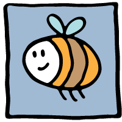
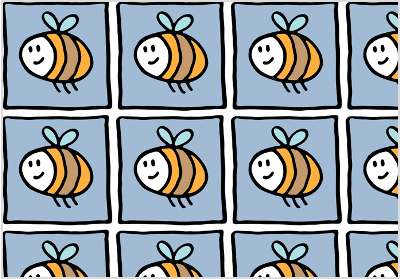
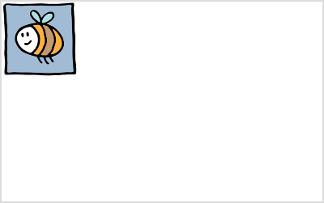
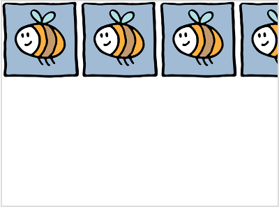
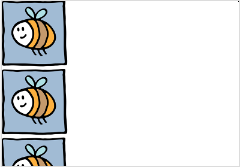
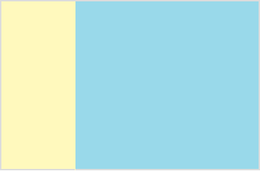

想要一张图片作为背景展现只需要一行代码...
background-image:url('image.png')
这行代码的意思是“这是我的背景图片，显示它。”这行代码可以放在你的HTML文件或者CSS文件内，这是推荐的方法。
下面是一些形象的例子用来展示当我们使用这行代码时，背景图片会怎样显示，同时我们通过在代码中添加其他东西，来让它以不同的方式显示。在这些例子中我们将使用一张蜜蜂的图片。这就是我们使用的图片...
下面我们将看到当我们用相同的一只蜜蜂作为背景时它会怎么样。
默认的背景图片设置（缺省设置） - repeat（重复）

如果我们只使用一行代码来显示一个空白HTML网页的背景图片...
body
{
background-image:url('image.png');
}
由于默认设置，这张图片在垂直方向和水平方向都重复显示。看起来很奇怪，是吗？如果你想让它看起来不同一点，你需要在默认的那一行代码中加点东西。
background-repeat
background-repeat 属性决定图片如何显示。
no-repeat - 让你的背景图片只显示一次（无重复）。

一个常用的地方是，当这张背景图片是一个图标（logo），只需要出现一次同时呆在那里不动。为了做到这一点我们需要告诉这张图片不要重复显示它自己。这就是“ no-repeat ”，代码是这样的...
body
{
background-image:url('image.png');
background-repeat:no-repeat;
}
于是图片只显示一次了。图片以它的原始大小显示在页面的左上角。
repeat-x - 在水平方向上重复显示背景图片。

有些时候你想要在水平方向上重复你的图片。所以我们得告诉图片这样做。这就是“ repeat-x ”，代码是这样的...
body
{
background-image:url('image.png');
background-repeat:repeat-x;
}
请注意，这种方法在使用非常小的图片来创建页面的顶部时非常普遍。如果你想要你的页面顶部有一个渐变色或者多种颜色的背景，你可以使用像这样的一张极细的小图片...
如果我们在水平方向上重复这张图片，那么在网页的顶部就会有一个好看的渐变色背景。就像这样...
所有的这种效果都可以仅仅使用一张只有一个像素（1px）宽的图片来实现。这种方法非常好，因为图片需要一定的时间来加载，因此图片越小，它就可以越快显示出来。使用这种方法，你的网页的顶部将会更快速的显示出来。
repeat-y - 在垂直方向上重复背景图片。

有些时候你会需要在垂直方向上来重复显示图片。只需使用“ repeat-y ”，代码是这样的...
body
{
background-image:url('image.png');
background-repeat:repeat-y;
}
就像是水平重复图片一样，这种技术有时被用于使用小图片创建网页样式。如果你需要使用一张小图片来作为边栏和主要内容栏目的背景色...
如果我们在垂直方向上重复这样一张图片，我们可以给我们的网页创建一个很好看的背景，象是这样...
所有的颜色效果仅来自一张一个像素（1px）高的图片。记住，图片越小，它需要的加载时间越短。
inherit
继承（inherit）这一属性很简单的让背景图片采用和它的父级元素相同的显示方式。举个例子，如果你的body标签的背景图片只显示一次（no-repeat），然后任何时候你都可以在你网页的其他地方（比如sidebar）来使用inherit属性是它采用同一种显示方式。
body
{
background-image:url('image.png');
background-repeat:inherit;
}
继承（inherit）在CSS中与在现实世界中拥有一样的意义。如果你从你的父母那里继承了一些东西，现在它就属于你的了。
background-attachment
背景附属（background-attachment）决定图片是否需要固定在原位，或者是跟随页面移动。
scroll - 默认（缺省）设置
默认的背景图片工作方式是，它会随页面滚动。如果你向下滚动一个页面，背景图片会跟随它滚动...
背景图片在默认设置里是跟随页面滚动的，所以你不一定要将它声明出来，但是如果你想要这样写，可以参考以下的代码...
body
{
background-image:url('image.png');
background-repeat:no-repeat;
background-attachment:scroll;
}
fixed - 背景图片会固定在一个地方
一张固定位置的背景图片不会跟随页面滚动。如果你向下滚动页面，背景图片依然可见...
创建一个固定位置的背景图片，你必须在CSS中声明出来，像下面这样...
body
{
background-image:url('image.png');
background-repeat:no-repeat;
background-attachment:fixed;
}